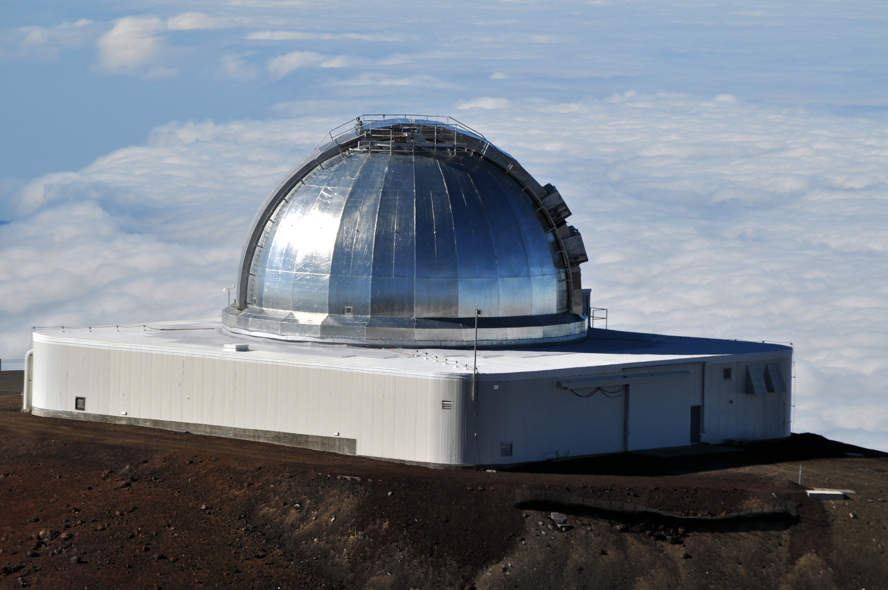

Explore Space Through NASA Images
NASA's APOD collection includes images of planets, galaxies, stars, nebulae, moons, and other astronomy topics. This project makes those images easier to search by date.
APOD Search is a simple astronomy web application that lets users explore NASA's Astronomy Picture of the Day by choosing a date.
The goal of this project is to create a responsive single-page style web application using HTML, CSS, JavaScript, the Fetch API, and local storage. Users can search for astronomy images, read NASA's explanation, and save favourite images in their browser.

NASA's APOD collection includes images of planets, galaxies, stars, nebulae, moons, and other astronomy topics. This project makes those images easier to search by date.
Users select a non-future date using the date input on the homepage.
The app uses NASA's APOD API to retrieve the image, title, date, and explanation.
Users can save favourite images, and the data is stored in local storage.